library(tidyverse)
library(ggplot2)
library(gridExtra)
library(factoextra)
library(FactoMineR)
library(pls)
library(psych)24 Principal components and factor analysis
Principal components analysis (PCA) and factor analysis are both statistical techniques used for dimensionality reduction and exploratory data analysis, but they differ in their objectives, assumptions, and interpretation.
24.1 Prerequisite
24.2 Principal components analysis
24.2.1 Principal component
PCA is a technique used to reduce the dimensionality of a dataset by transforming the original variables into a smaller set of new variables called principal components. These principal components are linear combination of the original variables in a dataset, derived in such a way that it captures the maximum amount of variance in the data with fewer components while reducing noise and redundancy.
Suppose you have a dataset with p variables. The i-th principal component Z_i can be represented as:
Z_i = w_{i1} X_1 + w_{i2} X_2 + \cdots + w_{ip} X_p
where w_{ij} are the weights (coefficients) corresponding to the original variables X_1, X_2, \ldots, X_p. These weights are derived from the eigenvectors of the covariance matrix of the data.
Principal components are new variables created from linear combinations of the original variables. Each principal component is a weighted sum of the original variables. Principal components are mutually orthogonal (uncorrelated) to each other. Each subsequent principal component captures variance that is not explained by the previous ones.
24.2.2 Steps to calculate
- Standardize the data
To avoid biases due to different scales of the variables, it’s common to standardize each variable so that they have a mean of 0 and a standard deviation of 1. Given a data matrix \mathbf X (with n rows representing samples and p columns representing variables), the standardized data can be computed as:
\mathbf X' = \frac{\mathbf X - \mu_\mathbf X}{\sigma_\mathbf X} where \mu_\mathbf X and \sigma_\mathbf X represent the mean and standard deviation of each variable in \mathbf X.
- Compute the covariance matrix
After standardizing, calculate the covariance matrix \mathbf S:
\mathbf S = \frac{1}{n-1} \mathbf {X}'^\top \mathbf X'
The covariance matrix \mathbf S is a p \times p matrix, where p is the number of variables, and it describes the covariance relationships between variables.
- Compute eigenvalues and eigenvectors
To find the directions of the principal components, solve the eigenvalue problem of the covariance matrix. The eigenvalue equation is:
\mathbf S \mathbf{v}_i = \lambda_i \mathbf{v}_i Here, \mathbf{v}_i represents the i-th eigenvector (principal component), and \lambda_i is the corresponding eigenvalue, which measures the variance along that eigenvector direction. The eigenvectors are ordered based on the descending order of their eigenvalues.
- Select principal components
The eigenvectors corresponding to the largest eigenvalues are selected as the principal components. The number of components is often determined by examining the cumulative variance explained by the first k principal components:
\text{CVE} = \frac{\sum_{i=1}^k \lambda_i}{\sum_{i=1}^p \lambda_i}
Typically, the number of principal components is chosen to capture 85% to 90% of the total variance.
- Compute principal component scores
The principal component scores represent the original data projected onto the new principal component directions. They are calculated as:
Z = \mathbf X' \mathbf{V}_k
where \mathbf{V}_k is the matrix of the first k principal component vectors.
24.2.3 Geometric explanation
Suppose we have a two-dimensional dataset where each data point has two features, \text X_1 and \text X_2. These data points can be represented on a 2D plane, with \text X_1 and \text X_2 as the coordinate axes. The covariance matrix describes the spread of the data points in different directions. By performing eigenvalue decomposition on the covariance matrix, we can find the main directions of the data. Eigenvectors represent the directions of the new principal components. Eigenvalues represent the amount of variance explained by each principal component.
The first principal component (Z_1) is the direction in which the data has the maximum variance. The second principal component (Z_2) is the direction orthogonal to Z_1and has the second-largest variance.
To better understand the geometric meaning of PCA, let’s use a simple 2D example and illustrate it with a graphical representation.
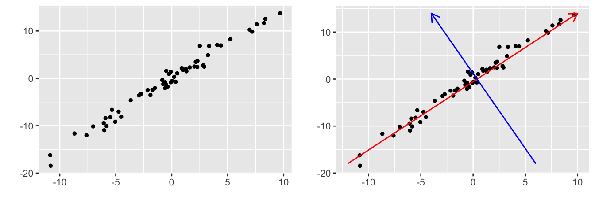
In the first plot, we visualize the original data points, which are scattered in a 2D plane. In the second plot, we add two lines, the red line represents the first principal component Z_1, and the blue line represents the second principal component Z_2. The red line captures the direction of maximum variance in the data. The blue line is orthogonal to the red line and the variance is small. Z_1 captures the direction in which the data has the maximum spread. This means that the data points are most dispersed along this line. Z_2 is orthogonal to Z_1, ensures that the new principal components are uncorrelated. If we project the data onto Z_1, we get a new one-dimensional representation that retains the maximum variance. By finding the main directions of the data, PCA simplifies the data structure while retaining as much information as possible. This geometric interpretation can help us better understand how PCA works and its applications in data analysis.
24.2.4 Properties
- Uncorrelated to each other
Principal components are orthogonal to each other, meaning that they are uncorrelated. PCA involves finding new axes (principal components) in the data such that each axis maximizes the variance in the data. Each new axis (principal component) is orthogonal to the previous ones, ensuring no overlap in the information they capture.
The orthogonality of principal components mathematically guarantees that the components are uncorrelated. Orthogonal vectors in space imply zero covariance between them.
- Equality of the sum of variance
The sum of variances of the original variables is equal to the sum of variances of the principal components. This ensures that no information is lost when transforming the data into its principal components.
In PCA, explained variance is an important concept that helps us understand how much information (variance) each principal component captures from the original data. The contribution rate and cumulative contribution rate are used to assess how much of the total variance is explained by each principal component and how much is explained cumulatively as more components are considered.
The contribution rate of a principal component is the proportion of the total variance in the data that is explained by that component. It is calculated by dividing the variance explained by a principal component by the total variance:
\frac{\lambda_i}{\sum_{j=1}^p \lambda_j}
where \lambda_i is the eigenvalue corresponding to the i-th principal component, which represents the amount of variance explained by that component, \sum_{j=1}^p \lambda_j is the sum of the eigenvalues for all components, representing the total variance in the data. A higher contribution rate means that the component captures a larger portion of the data’s total variance.
The cumulative contribution rate is the sum of the contribution rates of the first k principal components. It tells us how much of the total variance is explained by the first k components.
\sum_{i=1}^{k} \frac{\lambda_i}{\sum_{j=1}^p \lambda_j}
This value helps in determining how many principal components are necessary to explain a significant portion of the variance in the data. In practice, researchers often aim for a cumulative contribution rate of around 85% to 95%, meaning they retain enough components to capture most of the variability in the data without losing too much information.
- Component loading
In PCA, the term component loading or loading indicates how much each original variable contributes to a particular principal component. These loadings help explain how the data is projected onto the new axes (the principal components).
The loadings are the elements of the eigenvectors corresponding to the covariance or correlation matrix of the data. If \mathbf{V} is the matrix of eigenvectors, then the loadings for principal component Z_i are given by the corresponding eigenvector components v_{ij} (the weight of variable j in principal component i):
Z_i = v_{i1}X_1 + v_{i2}X_2 + \dots + v_{im}X_m
Here, X_1, X_2, \dots, X_m are the original variables, and v_{ij} is the loading of variable X_j on principal component Z_i.
The loadings represent the weight or contribution of each original variable to the corresponding principal component. They are often interpreted as follows:
- Large loadings (positive or negative): The variable contributes significantly to that principal component.
- Small loadings (close to zero): The variable contributes little to that principal component.
A principal component is essentially a new variable formed as a weighted linear combination of the original variables, and the loadings tell you which original variables have the most influence in this combination.
The loadings are often organized into a loading matrix, where each column represents a principal component and each row represents a variable. If there are m variables and k components, the loading matrix \mathbf{L} looks like this: \mathbf{L} = \begin{pmatrix}l_{11} & l_{12} & \dots & l_{1k} \\l_{21} & l_{22} & \dots & l_{2k} \\\vdots & \vdots & & \vdots \\l_{m1} & l_{m2} & \dots & l_{mk}\end{pmatrix}
Where l_{ij} is the loading of variable X_j on principal component Z_i.
Example 1:
To study the quality characteristics of deer antler, a researcher measured the content of nine amino acids—Aspartic acid (Asp), Glutamic acid (Glu), Serine (Ser), Arginine (Arg), Glycine (Gly), Threonine (Thr), Proline (Pro), Alanine (Ala), and Valine (Val)—in 39 batches of deer antler products. Perform a PCA to identify a few independent principal components.
df <- read_csv("datasets/ex24-01.csv", show_col_types = F)You can use the prcomp() function to perform PCA. This function computes the principal components by singular value decomposition of the correlation matrix (if scale. = T) or covariance matrix (if scale. = F).
pca <- prcomp(df, scale. = F)
pca |> summary()#> Importance of components:
#> PC1 PC2 PC3 PC4 PC5 PC6
#> Standard deviation 6.1803 1.41074 0.31616 0.16608 0.12823 0.11184
#> Proportion of Variance 0.9465 0.04932 0.00248 0.00068 0.00041 0.00031
#> Cumulative Proportion 0.9465 0.99586 0.99834 0.99902 0.99943 0.99974
#> PC7 PC8 PC9
#> Standard deviation 0.07733 0.06436 0.02299
#> Proportion of Variance 0.00015 0.00010 0.00001
#> Cumulative Proportion 0.99988 0.99999 1.00000The summary shows the proportion of variance explained by each component. The first few components that explain the largest proportion of variance are typically selected for further analysis. Typically, you select components that explain a cumulative variance of 80–90%.
You can generate the scree plot using plot() on the PCA object. The scree plot is a graphical representation of eigenvalues of the principal components in descending order. It helps determine how many principal components should be retained by displaying the amount of variance explained by each component.
par(cex.axis = 0.7)
pca |> plot(
type = "lines", main = "Scree Plot", cex.main = 0.9, cex.lab = 0.8
)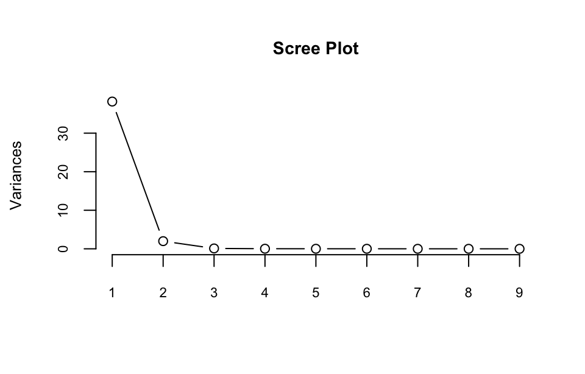
The loadings indicate how much each amino acid contributes to the principal components. You can access the loadings matrix through:
loadings <- pluck(pca, "rotation")
loadings#> PC1 PC2 PC3 PC4 PC5 PC6
#> x1 0.11007422 0.42075325 0.34430923 0.10962164 -0.02669335 -0.35112144
#> x2 0.24231528 0.62060456 -0.65068046 -0.23859574 0.11872685 -0.17265168
#> x3 0.08006905 0.26779696 0.03658930 -0.17586521 -0.40168173 0.81244634
#> x4 0.23456949 0.19282539 -0.05182612 0.50694464 -0.33551710 0.03650842
#> x5 0.80500995 -0.33127809 0.02862815 -0.06593596 -0.31604758 -0.18825369
#> x6 0.01258536 0.29787343 0.26825382 0.56014479 0.01294990 0.02163293
#> x7 0.39261823 -0.06991218 -0.04156936 0.26599423 0.75635264 0.38304008
#> x8 0.25459880 0.07376985 0.42542938 -0.43818772 0.15477934 0.03430612
#> x9 0.02374975 0.34657811 0.44558222 -0.24952472 0.12325475 -0.04122099
#> PC7 PC8 PC9
#> x1 -0.13284749 0.66992022 0.299740325
#> x2 0.13302184 -0.11899665 0.007786362
#> x3 0.09441518 0.24065131 0.036903121
#> x4 -0.64025177 -0.35115752 0.031275875
#> x5 0.23433292 0.09421837 -0.194761783
#> x6 0.66662631 -0.28288543 0.018445845
#> x7 -0.13507737 0.17477637 -0.030009709
#> x8 -0.05990310 -0.47058074 0.553688232
#> x9 -0.15710935 -0.12217923 -0.749674227You can create biplot to visualize how the different batches of deer antler products are projected onto the principal components. This visualization shows both the variables and the observations in terms of their relationship to the principal components.
pca |> fviz_pca_biplot(
geom = "point", pointshape = 1, col.var = "contrib",
gradient.cols = c("#00AFBB", "#E7B800", "#FC4E07"),
pointsize = 1.7, ggtheme = theme_gray()) +
theme(text = element_text(size = 9)) 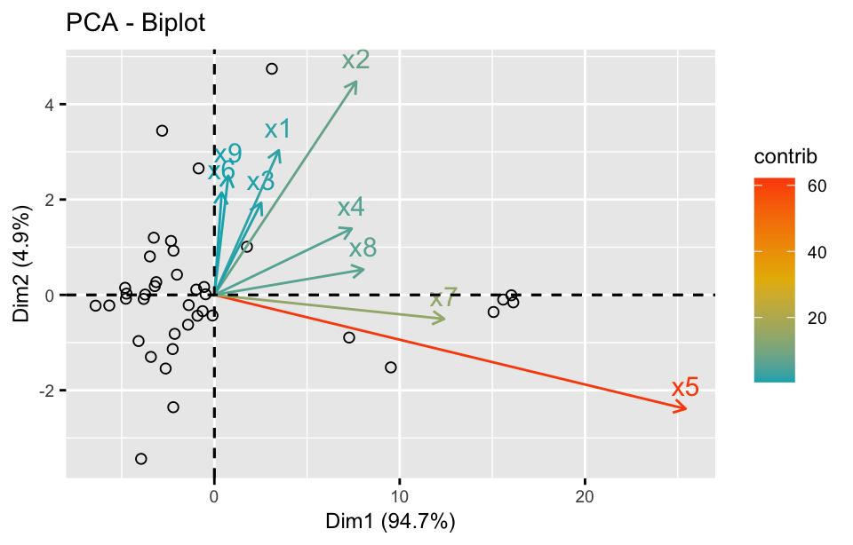
pca |> fviz_pca_var(
geom = "arrow", col.var = "contrib",
gradient.cols = c("#00AFBB", "#E7B800", "#FC4E07"),
ggtheme = theme_gray()) +
theme(text = element_text(size = 9)) 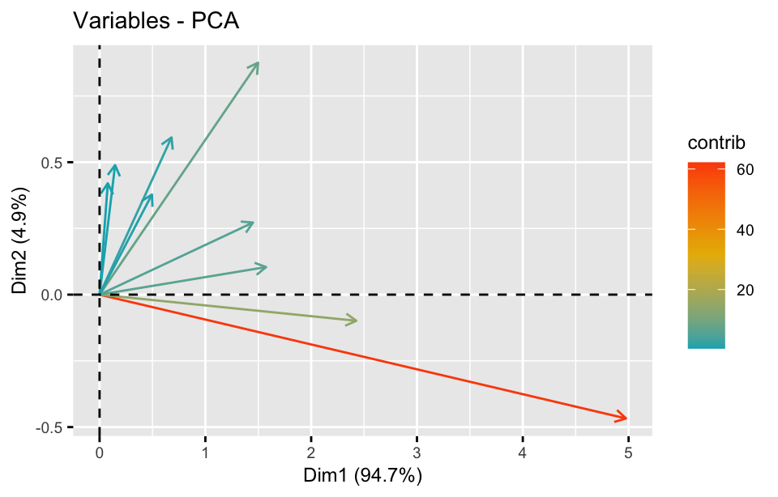
You can also plot a scatter plot of the first two principal components to see how the data clusters.
pca |> fviz_pca_ind(
geom = "point", pointshape = 1,
ggtheme = theme_gray()) +
theme(text = element_text(size = 9)) 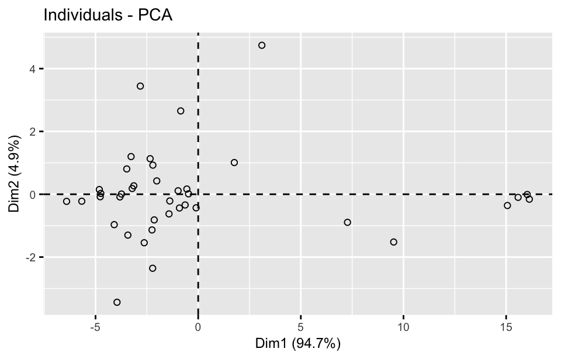
# Create a dataframe of the PCA scores
scores <- pca |>
pluck("x") |>
as_tibble()
# Plot the first two principal components
ggplot(scores, aes(x = PC1, y = PC2)) +
geom_point(shape = 1) +
labs(title = "PCA - Individuals", x = "PC1", y = "PC2") +
theme(text = element_text(size = 9))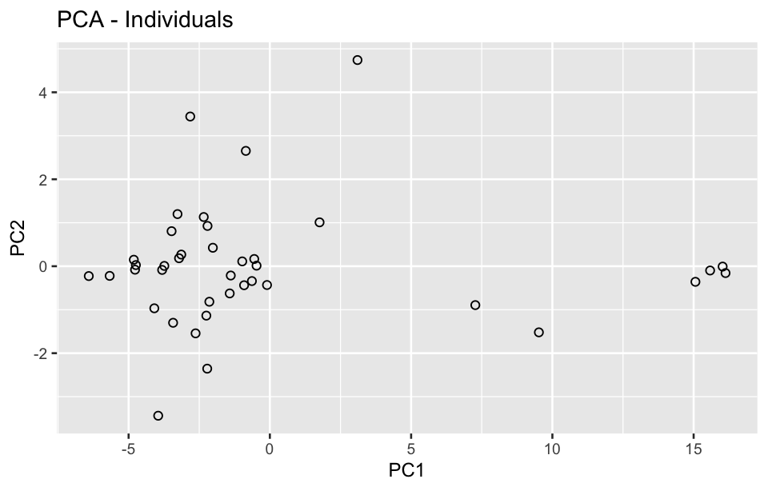
pca |> fviz_contrib(choice = "var", axes = 7, ggtheme = theme_gray()) +
theme(text = element_text(size = 9))
pca |> fviz_contrib(choice = "ind", axes = 7, ggtheme = theme_gray()) +
theme(text = element_text(size = 9))
pca |> fviz_eig(geom = "line", linecolor = "steelblue", ggtheme = theme_gray()) +
theme(text = element_text(size = 9))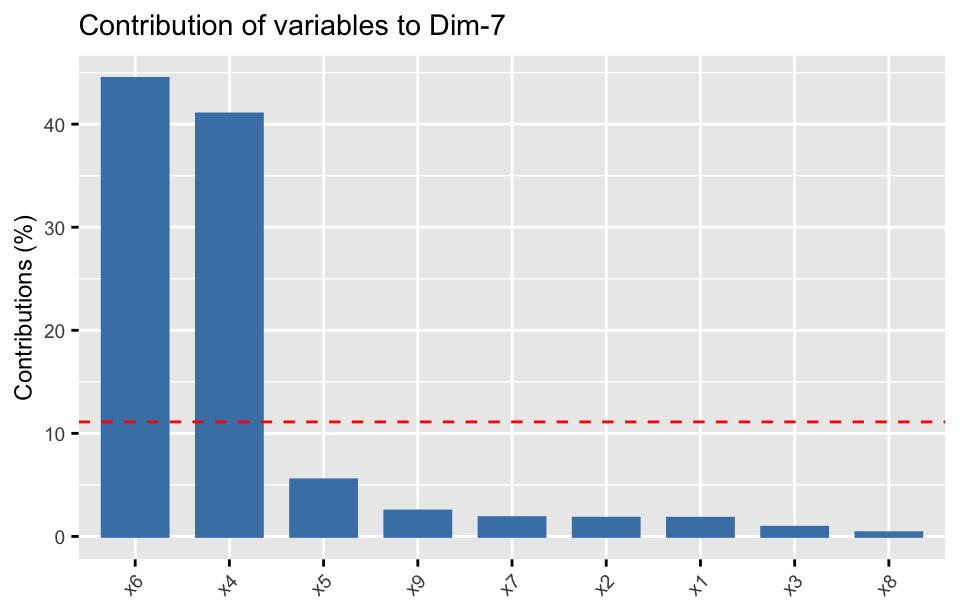
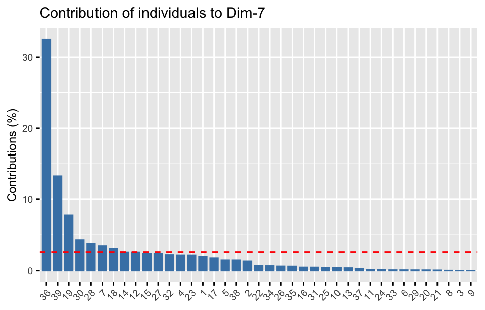
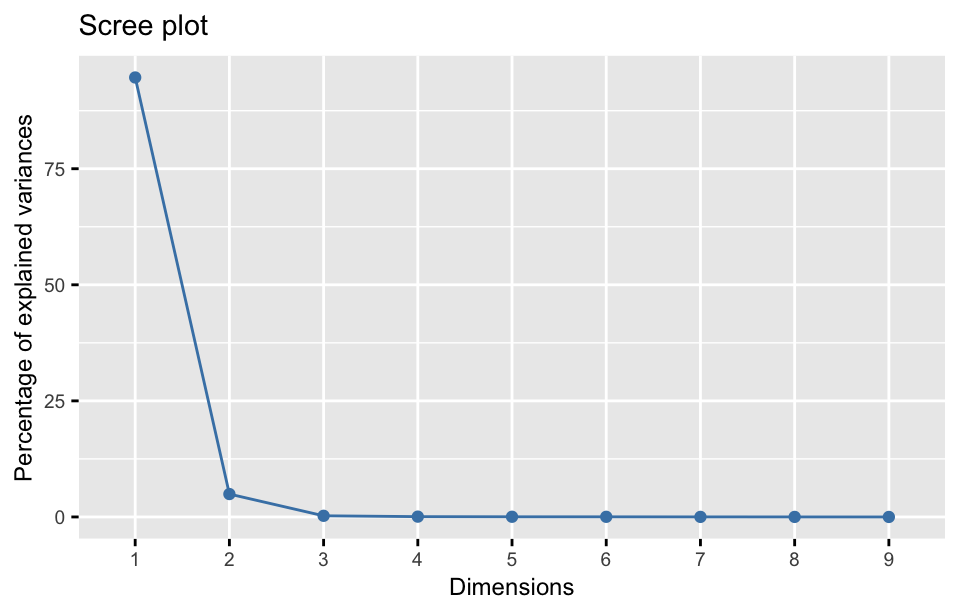
Also you can perform PCA using the PCA() function from FactoMineR package:
res.pca <- PCA(df, scale.unit = F, graph = F)
res.pca |> summary()#>
#> Call:
#> PCA(X = df, scale.unit = F, graph = F)
#>
#>
#> Eigenvalues
#> Dim.1 Dim.2 Dim.3 Dim.4 Dim.5 Dim.6 Dim.7
#> Variance 37.217 1.939 0.097 0.027 0.016 0.012 0.006
#> % of var. 94.654 4.932 0.248 0.068 0.041 0.031 0.015
#> Cumulative % of var. 94.654 99.586 99.834 99.902 99.943 99.974 99.988
#> Dim.8 Dim.9
#> Variance 0.004 0.001
#> % of var. 0.010 0.001
#> Cumulative % of var. 99.999 100.000
#>
#> Individuals (the 10 first)
#> Dist Dim.1 ctr cos2 Dim.2 ctr cos2 Dim.3 ctr
#> 1 | 3.711 | -3.425 0.808 0.852 | -1.301 2.237 0.123 | 0.500 6.591
#> 2 | 0.813 | -0.471 0.015 0.336 | 0.013 0.000 0.000 | 0.491 6.353
#> 3 | 2.507 | -2.207 0.336 0.775 | 0.927 1.135 0.137 | 0.733 14.143
#> 4 | 3.177 | -3.136 0.678 0.974 | 0.268 0.095 0.007 | -0.024 0.015
#> 5 | 15.585 | 15.583 16.730 1.000 | -0.099 0.013 0.000 | 0.073 0.141
#> 6 | 2.314 | -2.142 0.316 0.857 | -0.817 0.882 0.125 | 0.293 2.267
#> 7 | 1.599 | -1.421 0.139 0.790 | -0.626 0.518 0.153 | 0.290 2.208
#> 8 | 3.054 | -2.629 0.476 0.741 | -1.544 3.151 0.255 | -0.118 0.368
#> 9 | 15.070 | 15.063 15.632 0.999 | -0.359 0.170 0.001 | 0.252 1.678
#> 10 | 5.252 | -3.953 1.077 0.566 | -3.438 15.630 0.429 | -0.312 2.558
#> cos2
#> 1 0.018 |
#> 2 0.365 |
#> 3 0.085 |
#> 4 0.000 |
#> 5 0.000 |
#> 6 0.016 |
#> 7 0.033 |
#> 8 0.001 |
#> 9 0.000 |
#> 10 0.004 |
#>
#> Variables
#> Dim.1 ctr cos2 Dim.2 ctr cos2 Dim.3 ctr cos2
#> x1 | 0.672 1.212 0.557 | 0.586 17.703 0.424 | 0.107 11.855 0.014 |
#> x2 | 1.478 5.872 0.734 | 0.864 38.515 0.251 | -0.203 42.339 0.014 |
#> x3 | 0.488 0.641 0.613 | 0.373 7.172 0.357 | 0.011 0.134 0.000 |
#> x4 | 1.431 5.502 0.961 | 0.269 3.718 0.034 | -0.016 0.269 0.000 |
#> x5 | 4.911 64.804 0.991 | -0.461 10.975 0.009 | 0.009 0.082 0.000 |
#> x6 | 0.077 0.016 0.030 | 0.415 8.873 0.876 | 0.084 7.196 0.036 |
#> x7 | 2.395 15.415 0.996 | -0.097 0.489 0.002 | -0.013 0.173 0.000 |
#> x8 | 1.553 6.482 0.986 | 0.103 0.544 0.004 | 0.133 18.099 0.007 |
#> x9 | 0.145 0.056 0.076 | 0.483 12.012 0.845 | 0.139 19.854 0.070 |The results include the explained variance, the coordinates of observations on principal components, and the contributions of variables to each component.
The fviz_pca_ind() function visualizes the distribution of individuals on the first two principal components.
fviz_pca_ind(
res.pca, title = "PCA - Individuals", geom = "point",
ggtheme = theme_gray(), col.ind = "cos2",
gradient.cols = c("#00AFBB", "#E7B800", "#FC4E07"),
repel = T, pointshape = 1) +
theme(text = element_text(size = 9))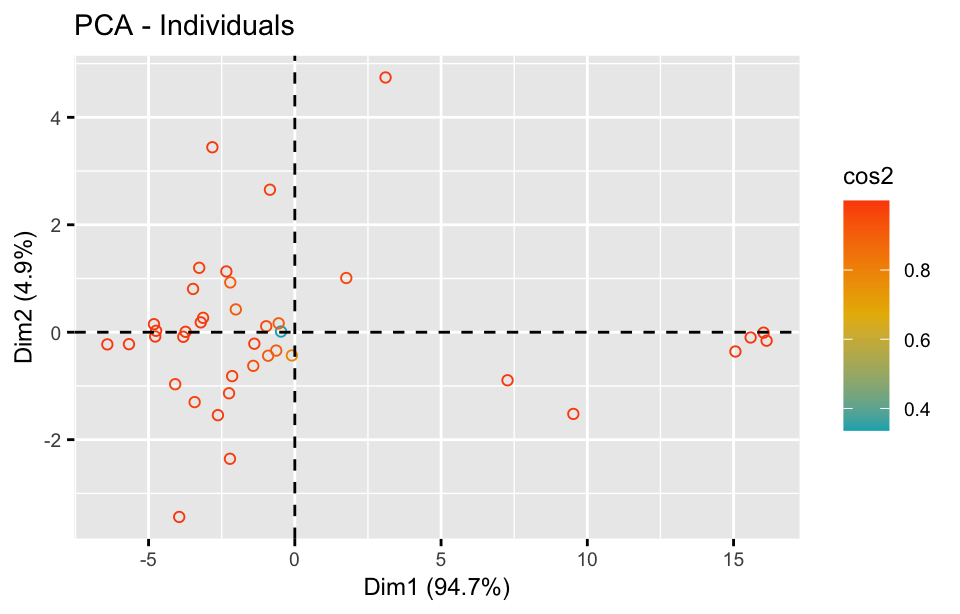
The fviz_pca_var() function visualizes the contribution of variables to the first two principal components.
fviz_pca_var(
res.pca, title = "PCA - Variables", ggtheme = theme_gray(),
col.var = "contrib",
gradient.cols = c("#00AFBB", "#E7B800", "#FC4E07"),
repel = T) +
theme(text = element_text(size = 9))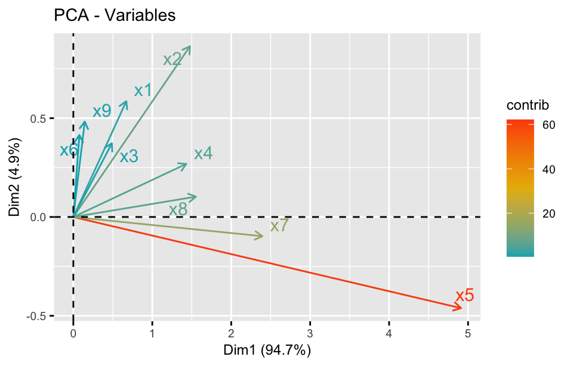
The biplot combines the information about both individuals and variables on the same plot.
fviz_pca_biplot(
res.pca, geom.ind = "point", ggtheme = theme_grey(),
pointshape = 21, pointsize = 1.5, col.var = "contrib",
gradient.cols = c("#00AFBB", "#E7B800", "#FC4E07"),
col.ind = "cos2", repel = TRUE) +
theme(text = element_text(size = 9))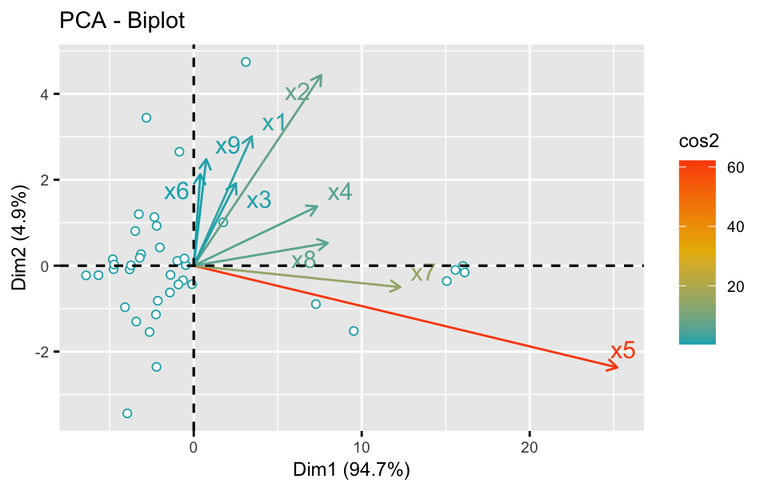
24.2.5 Principal component regression
In multivariate regression analysis, multicollinearity arises when independent variables are highly correlated. PCA addresses this issue by transforming the original variables into uncorrelated principal components, making the model more stable and improving regression results.
Principal component regression combines PCA with multiple linear regression. It is particularly useful in situations where multicollinearity poses a problem in ordinary least squares regression.
Steps in principal component regression
- Perform PCA: First, PCA is applied to the independent variables in the dataset. PCA transforms the original variables into new, uncorrelated principal components that are linear combinations of the original variables.
- Select principal components: Not all principal components are used in principal component regression. Typically, only the first few principal components, which explain most of the variance in the data, are selected for the regression. This step helps in reducing dimensionality and eliminating noise.
- Run linear regression: After selecting the principal components, a linear regression model is fit using these components as the independent variables rather than the original variables. The dependent variable remains unchanged.
- Predict and evaluate: The regression model is used to make predictions, and its performance is evaluated using metrics such as R-squared, mean squared error (MSE), or cross-validation.
Example 2:
The data of age, height, and weight for 50 infants and young children in a region were measured. Try to establish the regression relationship between age (month) , height (cm) and weight (jin).
df <- read_csv("datasets/ex24-02.csv", show_col_types = F)Here is a example of how to perform principal component regression using the pcr() function from the pls package.
# Fit PCR model
model <- pcr(weight ~ ., data = df, scale = F, validation = "LOO")
model |> summary()#> Data: X dimension: 50 2
#> Y dimension: 50 1
#> Fit method: svdpc
#> Number of components considered: 2
#>
#> VALIDATION: RMSEP
#> Cross-validated using 50 leave-one-out segments.
#> (Intercept) 1 comps 2 comps
#> CV 2.325 1.298 1.009
#> adjCV 2.325 1.297 1.008
#>
#> TRAINING: % variance explained
#> 1 comps 2 comps
#> X 94.09 100.00
#> weight 71.00 83.78After fitting the model, use cross-validation to determine the optimal number of components.
validationplot(model, val.type = "R2") 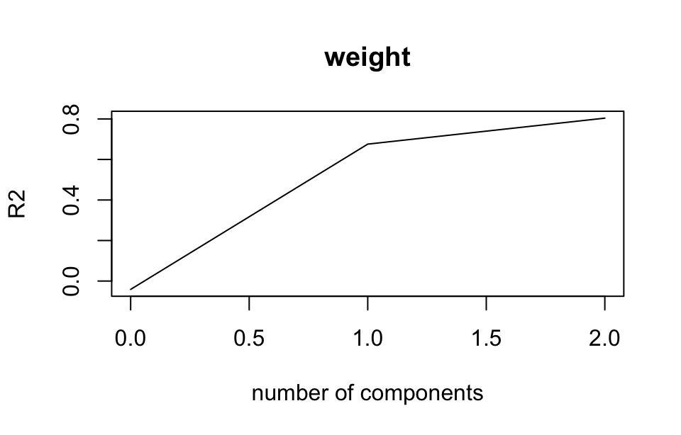
You can now use the selected number of principal components to make predictions and analyze the relationship between the dependent variable (weight) and the independent variables (age and height).
res <- predict(model, ncomp = 2, newdata = df)Here we write a function named pcr_extract_eq() that takes the PCR model and the number of principal components as inputs and outputs the regression equation directly.
pcr_extract_eq <- function(model, ncomp = NULL, digits = 4) {
if (is.null(ncomp)) {
ncomp <- model$ncomp
}
coef <- coef(model, ncomp = ncomp, intercept = T)
Y_name <- colnames(coef)
X_name <- rownames(coef) |>
gsub("^", "(", x= _) |>
gsub("$", ")", x= _) |>
gsub("((Intercept))", " ", x = _, fixed = T)
# Initialize the coefficients for the original variables
beta <- rep(0, nrow(coef))
names(beta) <- X_name
eq_parts <- c(Y_name, paste0("="))
# Loop through each principal component
for (i in 1:nrow(coef)) {
# Coefficient for the current principal component
beta[i] <- coef[i]
}
# Now build the equation using the coefficients
for (var_name in names(beta)) {
if (beta[var_name] >= 0) {
eq_parts <- c(eq_parts, paste0("+ ", round(beta[var_name], digits), "", var_name))
} else {
eq_parts <- c(eq_parts, paste0("- ", round(abs(beta[var_name]), digits), "", var_name))
}
}
# Print the final equation
equation <- paste(eq_parts, collapse = " ")
return(equation)
}- 1
- Get the regression coefficients of the original variables
pcr_extract_eq(model, ncomp = 1)#> [1] "weight = - 3.7216 + 0.1097(age) + 0.163(height)"pcr_extract_eq(model, ncomp = 2)#> [1] "weight = - 14.2159 - 0.1661(age) + 0.3486(height)"When all principal components are taken for regression, the regression equation is the same as that obtained by using the original independent variables.
lm(weight ~ age + height, data = df) |>
equatiomatic::extract_eq(use_coefs = T, coef_digits = 4)\operatorname{\widehat{weight}} = -14.2159 - 0.1661(\operatorname{age}) + 0.3486(\operatorname{height})
In a word, this principle components regression procedure helps to handle issues like multicollinearity and reduces the dimensionality of the predictors while retaining most of the information.
24.3 Factor analysis
Factor analysis (FA) is used to identify underlying relationships between observed variables. The goal is to model the data using fewer unobserved variables, called latent variables or factors, which explain the correlations or covariances among the observed variables. It’s widely used in fields such as psychology, social sciences, finance, and biology to reduce data dimensionality and uncover latent structures.
24.3.1 Types of factor analysis
- Exploratory factor analysis
Exploratory factor analysis (EFA) is used when you don’t have preconceived notions about the factor structure. It helps in identifying the number of factors and their relationships with the observed variables.
- Confirmatory factor analysis
Confirmatory factor analysis (CFA) is used when you have a hypothesis or prior knowledge about the number of factors and their relationships. CFA tests how well the hypothesized model fits the data.
The factor analysis discussed in this chapter primarily refers to EFA, CFA will be discussed in details in Chapter 26 .
24.3.2 Mathematical model
In factor analysis, each observed variable X_1, X_2, \dots, X_p is represented as a linear combination of the latent factors F_1, F_2, \dots, F_m and an error term:
X_i = \lambda_{i1}F_1 + \lambda_{i2}F_2 + \dots + \lambda_{im}F_m + \epsilon_i
where X_i is the i-th observed variable, \lambda_{ij} is the loading of variable i on factor j, F_j is the j-th factor, \epsilon_i is the error term representing the variance in X_i not explained by the factors.
Mathematically, the factor analysis model can be written as a matrix form:
\mathbf X = \boldsymbol \mu + \mathbf L \cdot \mathbf F + \boldsymbol \epsilon
where \mathbf X is the matrix of observed variables, \boldsymbol \mu is a vector of means for the observed variables (it is often assumed to be \mathbf 0 if the data is centered). \mathbf F is a vector of factors (unobserved variables), typically assumed to have a mean of \mathbf 0 and a standard deviation of \mathbf 1. \mathbf L is a factor loading matrix, where each entry \lambda_{ij} represents the contribution of the j-th factor to the i-th observed variable. This matrix explains the relationship between the factors and the observed variables. \boldsymbol \epsilon is a vector of unique factors or errors (residuals), assumed to be uncorrelated across variables and factors.
The model meets the following assumptions:
- The observed variables are linear combinations of the factors plus error terms.
- The unique factors (error terms) are uncorrelated with the common factors and with each other.
- The factors are often assumed to be uncorrelated with each other (this assumption can be relaxed in some types of factor analysis, such as oblique rotations).
- Both the factors and the observed variables are assumed to follow a multivariate normal distribution (although this assumption is not always strictly required).
The covariance structure of the observed variables can be decomposed into the contribution from the common factors and the specific variances:
\boldsymbol \Sigma_\mathbf X = \mathbf L \cdot \mathbf{\Psi} \cdot \mathbf L^\top + \mathbf{\Theta}
where \boldsymbol \Sigma_\mathbf X is the covariance matrix of the observed variables, \mathbf L \cdot \mathbf{\Psi} \cdot \mathbf L^\top represents the part of the covariance explained by the common factors, where \mathbf{\Psi} is the covariance matrix of the factors (often diagonal if factors are assumed to be uncorrelated), \mathbf{\Theta} is a diagonal matrix containing the specific variances (unique factor variances) of each observed variable.
24.3.3 Factor loading matrix
The calculation of factor loading matrix is a key step in factor analysis, which reveals the relationship between observed variables and factors. Here’s the process:
- Data standardization
Before performing factor analysis, the data is standardized to ensure each variable has a mean of 0 and a standard deviation of 1. This is crucial because factor analysis is based on the covariance or correlation matrix, and standardization allows for comparison across different units.
- Construct correlation or covariance matrix
Factor analysis begins with the construction of a correlation matrix (or covariance matrix), which measures the linear relationships between the variables. For p variables X_1, X_2, \dots, X_p, the correlation matrix \mathbf R is:
\mathbf R = \begin{bmatrix}1 & r_{12} & \cdots & r_{1p} \\r_{21} & 1 & \cdots & r_{2p} \\\vdots & \vdots & \ddots & \vdots \\r_{p1} & r_{p2} & \cdots & 1\end{bmatrix}
- Select the number of factors
Several methods, such as Kaiser’s criterion (eigenvalues greater than 1), scree plot, or cumulative variance can help determine the number of factors to extract. Typically, factors with eigenvalues greater than 1 are retained, or factors that explain a substantial portion of the variance are chosen.
- Eigenvalue and eigenvector decomposition
Next, the correlation (or covariance) matrix undergoes eigenvalue decomposition. For a p \times p correlation matrix \mathbf R, p eigenvalues \lambda_1, \lambda_2, \dots, \lambda_p and their corresponding eigenvectors are computed. If m factors are chosen, the largest m eigenvalues and their corresponding eigenvectors are retained.
- Factor loading matrix calculation
The factor loading matrix \mathbf L shows the correlation between each observed variable and the extracted factors. It is computed by combining the eigenvectors with the eigenvalues. If m factors are retained, the factor loading matrix will be a p \times m matrix:
\mathbf L = \begin{bmatrix}\lambda_{11} & \lambda_{12} & \cdots & \lambda_{1m} \\\lambda_{21} & \lambda_{22} & \cdots & \lambda_{2m} \\\vdots & \vdots & \ddots & \vdots \\\lambda_{p1} & \lambda_{p2} & \cdots & \lambda_{pm}\end{bmatrix}
where \lambda_{ij} is the factor loading of variable i on factor j,
The loading values indicate how much of the variance in each observed variable is explained by the factor. The formula for calculating the loading matrix is:
\mathbf L = \mathbf V \cdot \sqrt{\boldsymbol \Lambda}
Where \mathbf V is the matrix of eigenvectors, and \sqrt{\boldsymbol \Lambda} is the diagonal matrix with the square roots of the largest eigenvalues on the diagonal.
The factor loading matrix is derived by decomposing the correlation matrix, selecting eigenvalues, and calculating how much each factor explains the variance of observed variables. Factor rotation can be applied to make the interpretation of the matrix more straightforward.
24.3.4 Factor rotation
Once the factors are extracted, they are often rotated to improve interpretability. There are two main types of factor rotation:
- Orthogonal rotation
Orthogonal rotationassumes factors are uncorrelated. Varimax rotation is the most commonly used orthogonal rotation technique. The goal is to maximize the variance of squared loadings within factors, so each factor has a few large loadings and many near-zero loadings. This makes it easier to interpret which variables are most strongly associated with which factors. After varimax rotation, each factor typically has a clearer and more distinct set of variables loading on it.
There are other orthogonal rotation techniques, such as quartimax and equamax.
- Oblique rotation
Oblique rotation allows factors to be correlated, meaning the factors are not constrained to be orthogonal. Oblique rotations are useful when there is reason to believe the underlying factors might be related to one another. The interpretation becomes more complex, but it can provide a more realistic solution in cases where the factors are expected to overlap.
Oblimin and promax are two common methods of oblique factor rotation. Unlike orthogonal rotations, these methods are suitable when the underlying factors are expected to be related. For example, in psychological tests, factors like “anxiety” and “depression” might correlate, so an oblique rotation could yield a better representation of the data.
The rotated factor loading matrix reveals the contribution of each variable to the factors. Loadings with absolute values greater than 0.4 or 0.5 are considered significant, indicating that the factor explains a substantial portion of that variable’s variance.
Example 3:
In order to reasonably assess the quality of its medical work over different months, a hospital, collected data over three years on 9 indicators: outpatient visits, number of discharged patients, bed occupancy rate, bed turnover rate, average length of hospital stay, cure and improvement rate, mortality rate, diagnostic accuracy rate, and rescue success rate. The factor analysis is used to explore the comprehensive indicator system.
df <- read_csv("datasets/ex24-03.csv", show_col_types = F) Determining the number of factors to retain in a factor analysis is a crucial step, and there are several methods commonly used to help decide how many factors are appropriate for your data:
Kaiser’s Criterion: This rule suggests that only factors with eigenvalues greater than 1 should be retained. The idea is that each factor should account for at least as much variance as a single observed variable.
cor(df) |>
eigen() |>
pluck("values")
cov(scale(df)) |>
eigen() |>
pluck("values")
cor(scale(df)) |>
eigen() |>
pluck("values")- 1
- The correlation matrix of the original data is the same as the covariance matrix of the standardized data. The correlation matrix and the covariance matrix of the standardized data are the same and exchangeable.
#> [1] 3.46982505 2.11482958 1.45147819 0.88193039 0.68357362 0.54160851
#> [7] 0.45380144 0.20567066 0.12673582 0.07054673
#> [1] 3.46982505 2.11482958 1.45147819 0.88193039 0.68357362 0.54160851
#> [7] 0.45380144 0.20567066 0.12673582 0.07054673
#> [1] 3.46982505 2.11482958 1.45147819 0.88193039 0.68357362 0.54160851
#> [7] 0.45380144 0.20567066 0.12673582 0.07054673Parallel analysis: Parallel analysis compares the eigenvalues of the actual data to eigenvalues obtained from randomly generated data sets with the same number of variables and observations. The number of factors retained is equal to the number of eigenvalues that are greater than the eigenvalues from the random data.
fa.parallel(cor(df), n.obs = 36, fm = "ml", fa = "fa") #> Parallel analysis suggests that the number of factors = 4 and the number of components = NA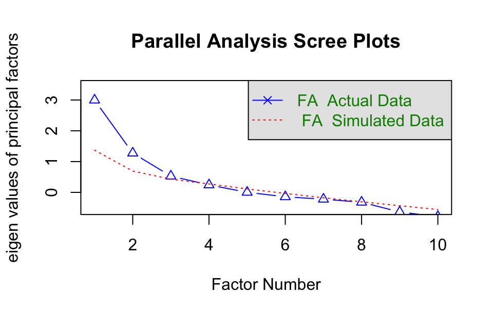
The primary function used for factor analysis is fa() from the psych package. Additionally, the factanal() function from the base stats package can also be used for factor analysis.
model <- fa(df, nfactors = 4, rotate = "varimax", fm = "ml")
model |> pluck("loadings")#>
#> Loadings:
#> ML2 ML4 ML3 ML1
#> x0 0.971 -0.192
#> x1 -0.269 0.222 0.934
#> x2 0.788 0.246 0.209 0.223
#> x3 -0.182 0.812
#> x4 0.371 0.902 0.202
#> x5 -0.545 -0.312 0.271 0.275
#> x6 0.989
#> x7 -0.239 -0.189 -0.416
#> x8 -0.608 0.198
#> x9 0.687 -0.265
#>
#> ML2 ML4 ML3 ML1
#> SS loadings 3.006 1.761 1.288 1.169
#> Proportion Var 0.301 0.176 0.129 0.117
#> Cumulative Var 0.301 0.477 0.606 0.722model <- factanal(df, factors = 4, rotation ="varimax")
model |> pluck("loadings")#>
#> Loadings:
#> Factor1 Factor2 Factor3 Factor4
#> x0 0.971 -0.192
#> x1 -0.269 0.222 0.934
#> x2 0.788 0.246 0.209 0.223
#> x3 -0.182 0.812
#> x4 0.371 0.902 0.202
#> x5 -0.545 -0.312 0.271 0.275
#> x6 0.989
#> x7 -0.239 -0.189 -0.416
#> x8 -0.608 0.198
#> x9 0.687 -0.265
#>
#> Factor1 Factor2 Factor3 Factor4
#> SS loadings 3.006 1.761 1.288 1.169
#> Proportion Var 0.301 0.176 0.129 0.117
#> Cumulative Var 0.301 0.477 0.606 0.722The output shows the results of a factor analysis with four factors. Here’s how to interpret the results:
Factor1: Variable x0 has a high positive loading (0.971), meaning it is strongly related to Factor1. Variables x2 and x9 also have moderate positive loadings on Factor1 (0.788 and 0.687).
Factor2: Variables x3 (0.812) and x4 (0.902) are strongly related to Factor2.
Factor3: Variable x6 has a very high loading on Factor3 (0.989), suggesting it primarily defines this factor.
Factor4: Variable x1 has a strong loading on Factor4 (0.934), suggesting it strongly contributes to this factor.
24.3.5 Matters need consideration
The solution to a factor analysis is not unique. There are several reasons for this:
- Rotation ambiguity: After extracting the initial factors, different rotations can be applied to simplify or clarify the structure of the factor loadings. The rotation affects how the factors are interpreted, but there are many possible rotations, leading to different sets of factor loadings and thus different interpretations.
- Sign ambiguity: Factor analysis can produce factor loadings with positive or negative signs, and both can explain the same amount of variance. Swapping the sign of all loadings for a factor does not change the interpretation but can lead to different representations of the solution.
- Factor score indeterminacy: The factor scores (the values that represent how much each individual case scores on each factor) are indeterminate. Different methods (e.g., regression, Bartlett, Thurstone’s) can be used to estimate factor scores, and each method can yield slightly different scores. Factor analysis provides factor loadings, but the scores themselves can vary depending on the estimation method used.
- Number of factors chosen: The number of factors to retain is subjective and based on criteria such as the Kaiser criterion (eigenvalues > 1), scree plot, or parallel analysis. The choice of the number of factors can lead to different factor structures, so even when the same data is used, analysts might arrive at different conclusions.
Distinctions between PCA and FA
- Different objectives: PCA is primarily used for dimensionality reduction. The goal is to simplify a dataset by extracting the most important principal components while retaining as much of the original information as possible. It focuses on combining the original variables into uncorrelated principal components that explain the maximum variance in the data. FA is primarily used to identify underlying structures or patterns. The goal is to uncover the latent relationships between variables and determine which variables can be grouped into the same factor. FA emphasizes the understanding of underlying constructs.
- Mathematical Foundations: PCA is based on the eigenvalue decomposition of the covariance or correlation matrix, producing new variables (principal components) that are linear combinations of the original variables. FA is Based on a model assumption where observed variables are generated by factors and error terms. Estimation is usually done through least squares or maximum likelihood methods. Factor loadings indicate the relationships between variables and latent factors.
- Application contexts: PCA is more suitable for data preprocessing and feature extraction, especially when the number of variables exceeds the number of observations. FA is more commonly applied in fields like psychology and sociology to identify the influence of latent variables.
Appropriate sample size
For reliable factor analysis, it is generally recommended to have at least 100 to 200 cases, with a preferred observation-to-variable ratio of 10:1 or higher. However, specific requirements will vary depending on the complexity of the model, communalities of the variables, and the number of factors.